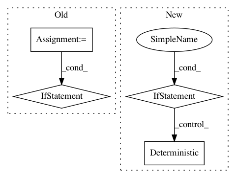

2f5075be900731232fa6b4bd5a4990b143307df2,pymc3/tests/test_step.py,TestStepMethods,check_trace,#TestStepMethods#Any#,114
Before Change
test_steps = 100
n_steps = int(os.getenv("BENCHMARK", 100))
benchmarking = (n_steps != test_steps)
if benchmarking:
tqdm.write("Benchmarking {} with {:,d} samples".format(step_method.__name__, n_steps))
else:
tqdm.write("Checking {} has same trace as on master".format(step_method.__name__))
with Model() as model:
Normal("x", mu=0, sd=1)
trace = sample(n_steps, step=step_method(), random_seed=1)
if not benchmarking:
assert_array_almost_equal(trace.get_values("x"), self.master_samples[step_method], decimal=select_by_precision(float64=6, float32=4))
def check_stat(self, check, trace, name):
for (var, stat, value, bound) in check:
s = stat(trace[var][2000:], axis=0)
close_to(s, value, bound)
After Change
n_steps = 100
with Model():
x = Normal("x", mu=0, sd=1)
if step_method.__name__ == "SMC":
Deterministic("like", - 0.5 * tt.log(2 * np.pi) - 0.5 * x.T.dot(x))
trace = smc.ATMIP_sample(n_steps=n_steps, step=step_method(random_seed=1),
n_jobs=1, progressbar=False, stage="0",
homepath=self.temp_dir)
else:
trace = sample(n_steps, step=step_method(), random_seed=1)
print(repr(trace.get_values("x")))
assert_array_almost_equal(
trace.get_values("x"),
self.master_samples[step_method],
In pattern: SUPERPATTERN
Frequency: 3
Non-data size: 4
Instances
Project Name: pymc-devs/pymc3
Commit Name: 2f5075be900731232fa6b4bd5a4990b143307df2
Time: 2017-04-18
Author: ColCarroll@users.noreply.github.com
File Name: pymc3/tests/test_step.py
Class Name: TestStepMethods
Method Name: check_trace
Project Name: aleju/imgaug
Commit Name: 2ee7ee03dd71cf59f7977beb0ed53738e2ac8349
Time: 2016-11-10
Author: kontakt@ajung.name
File Name: pyimgaug/parameters.py
Class Name: Uniform
Method Name: __init__
Project Name: aleju/imgaug
Commit Name: 2ee7ee03dd71cf59f7977beb0ed53738e2ac8349
Time: 2016-11-10
Author: kontakt@ajung.name
File Name: pyimgaug/parameters.py
Class Name: DiscreteUniform
Method Name: __init__